Installing ASSET#
This tutorial will guide you through the complete setup process for installing and building ASSET from scratch on: * Windows * Linux * Docker
Windows Installation#
In order to build ASSET on Windows the following dependencies are required:
Visual Studio 2017 or greater (Link to Visual Studio Community 2022)
- A Python installation with Numpy, however we recommend using Anaconda.
The Python packages SpiceyPy, Sphinx, and Furo
Step-By-Step Guide#
We will begin by installing Visual Studio (VS).
Follow the VS installation prompts until you are prompted to select any additional packages to install with VS. Here we will want to select Desktop development with C++; however, we are going to make one change to the defaults for the C++ install and un-check the option for “C++ Clang tools for Windows” (shown below).

Also ensure that the “C++ CMake Tools for Windows” is checked. After doing this continue and finish the installation.
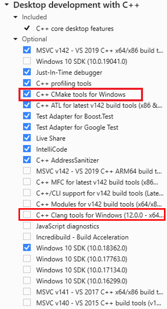Next we will install the LLVM Compiler Toolkit. An LLVM installation of at least LLVM-11 is required, and we recommend using the latest version if possible.
Navigate to the LLVM github releases page, select your desired version, and download the LLVM win64 installer (LLVM-15.0.0-win64.exe for example). Proceed with the LLVM install, however ensure that the install option “Do not add LLVM to the system PATH” is checked. After finishing the LLVM installation we can proceed with installing Intel MKL.
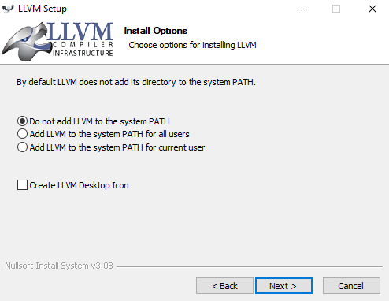Download and install the Intel oneAPI MKL, using the offline installer.
Install with the recommended settings and then proceed to installing Anaconda, if desired. If you are not using Anaconda you may skip the next step.
Now download and install Anaconda.
Check that Anaconda is set to be placed on the PATH and set Anaconda to be your default Python. Additionally install the following packages.
SpiceyPy, Sphinx, and Furo
Your version of Anaconda may be installed in “ProgramData” and may be named “Anaconda”, “Anaconda3”, or “anaconda3”, depending on your installation settings.
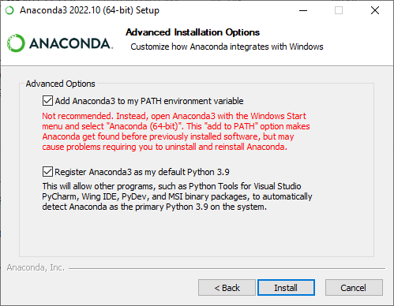After installing anaconda, it may be necessary to upgrade numpy through pip, due to potential compatibibility issues with numpy’s version of libiomp5md.dll and Intel MKL’s version.
pip install numpy --upgradeWarning
if you aren’t using anaconda, you are still going to need numpy (comes with anaconda by default).
Next we will be adding the required system and PATH variables to build ASSET.
First, add the Intel oneAPI to a new system variable named “ONEAPI_ROOT” and set the variable value to your oneAPI install directory, as shown below. If your install directory is different, be sure to point this to the correct folder. This may have already been set when you installed oneAPI.
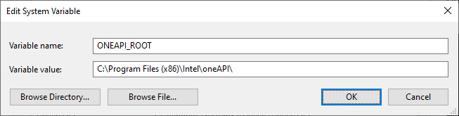Warning
If you are using an Alder Lake or Raptor Lake Intel CPU it may be beneficial to add the system variable “MKL_ENABLE_INSTRUCTIONS” with value “AVX” as well.
We also need to add a few variables to our Path.
The following directories should be added to your system PATH and set as your default Python install. Once again, be sure to point this to the actual location of the relevant folders on your computer.
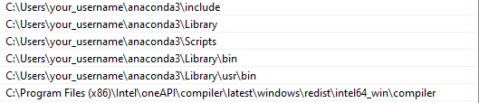Now, clone the ASSET repo to where you want it to live.
If you are cloning from the command line, make sure to call
git submodule update --init --recursiveinside of the repository after cloning to ensure that the dependencies are downloaded.We are almost there! Now, open VS and be sure to run it as administrator to avoid any conflicts when building the Python library. Additionally, ensure that your Python IDE is closed during this step.
Open the ASSET folder with VS and wait for it to finish loading. After VS has finished loading the ASSET repo directory, navigate to the CMakeSettings.json file. Here it is recommended to change the integer number of threads to be the amount of RAM your computer has divided by 3 (rounded down).
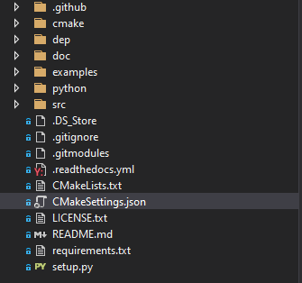 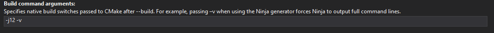Now we are going to configure the ASSET CMake settings by going to the project dropdown menu and selecting “Configure ASSET” or “Configure Cache” (depending on the version of VS). Wait until the output message from CMake says that it is finished and proceed to the build step.
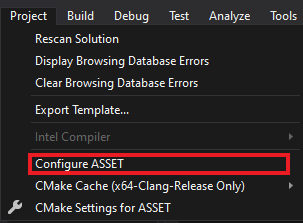The last step is to actually build ASSET! After the configuration step has completed navigate to the Build dropdown menu and choose “Build All” (or Ctrl + Shift + B). Keep your Python IDE closed until the build completes.
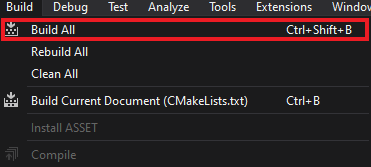With that you should have a successfully built ASSET Python library and are ready to get started with the rest of the tutorials.
To import ASSET simply use the following in your Python IDE
import asset_asrl
Linux Installation#
The dependencies for Linux installations are similar to that of Windows; however, we’ll be using Visual Studio Code for our IDE:
- Visual Studio Code
Ensure that you have a working version of CMake installed
- LLVM Compiler Toolkit (recommended)
GCC 9 or greater can also be used
The Python packages SpiceyPy, Sphinx, and Furo
Step-by-Step Guide#
This guide was written assuming that the user has a working Ubuntu installation; however, ASSET will work with other Linux distributions. Simply use the appropriate commands to install the required packages. If it is desired to use an IDE other than Visual Studio Code, it is still required that a version of CMake of at least 3.16 is installed.
We will begin by installing Visual Studio Code (VSCode).
Install VSC as desired, along with the C/C++ and CMake Tools Extensions.
Now, install LLVM clang using the package manager.
sudo apt install clang lldb lldor if you desire to use gcc
sudo apt update sudo apt install build-essential gcc --version
Download and install the Intel oneAPI MKL, using the offline installer. The complete Linux installation guide for Intel oneAPI can be found here.
Note
We recommend that you use the oneAPI gui installer through the Intel website; however, if it necessary to install via the bash terminal, those directions can be found here.
Install with the recommended settings and then proceed to installing Anaconda, if desired. If you are not using Anaconda you may skip the next step.
Now, download and install Anaconda.
Use pip to install SpiceyPy.
if you are using anaconda rather than a generic python installation, it may be necessary to upgrade numpy through pip, due to potential compatibibility issues with numpy’s version of openmp and Intel MKL’s version.
conda install nomklEven if you already have anaconda or a python distribution installed you will need these packages.
SpiceyPy, Sphinx, and Furo
Warning
if you aren’t using anaconda, you are still going to need numpy (comes with anaconda by default).
Next, we will set the required system variables to build ASSET.
Use the source command to properly setup the oneAPI variables.
source /opt/intel/oneapi/setvars.shNow, clone the ASSET repo to where you want it to live.
Note
If you are cloning from the command line, make sure to call
git submodule update --init --recursiveinside of the repository after cloning to ensure that the dependencies are downloaded.After installing the dependencies, open VSCode to build ASSET.
Configure the VSCode CMake extension to use the Ninja generator. You may need to install Ninja.
apt install ninja-buildSelect the type of build (1) you wish to perform (Release is correct if you are going to be running code using ASSET), and kit to use (2) (gcc or clang).
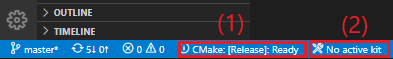Now hit build to begin building ASSET
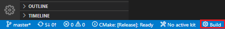With that you should have a successfully built ASSET Python library and are ready to get started with the rest of the tutorials.
To import ASSET simply use the following in your Python IDE
import asset_asrl
Docker#
Want to skip installing all of the dependencies? ASSET can be installed through a Docker image. There’s also great integrations of Docker and VS Code.
Download the Docker/VS Code project template here and get to coding!
https://github.com/jasonmeverett/asset-example-project
Developing Docker Images#
Interested in contributing to Docker/ASSET development? Check in-depth details in Dockerfile and Dockerfile-dev in the repository.
Next Steps#
If this is your first time using ASSET, it’s now recommended that you begin reviewing the remaining tutorials, such as Vector Function Tutorial. After you feel comfortable with some of ASSET’s coding paradigms, a select set of tutorials that highlight ASSET’s features and capabilities are provided in Examples.